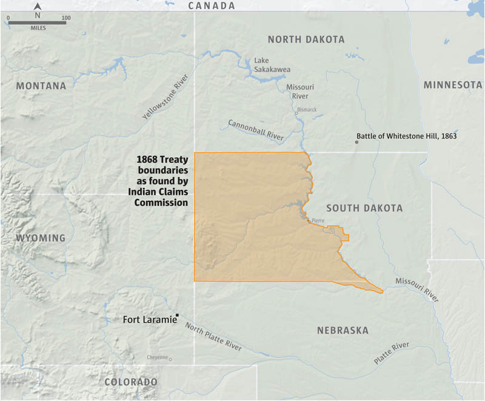
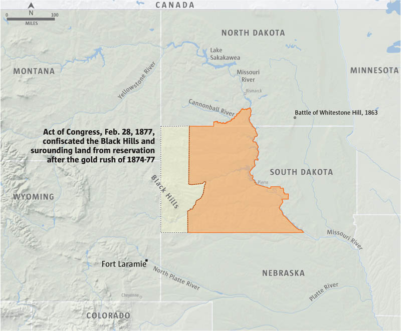
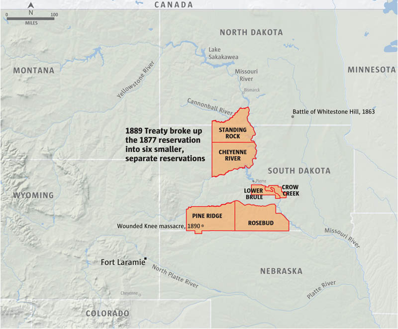
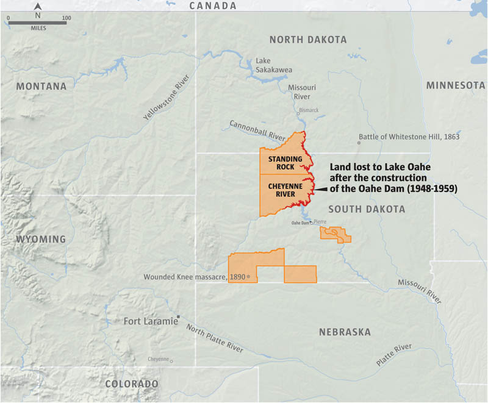
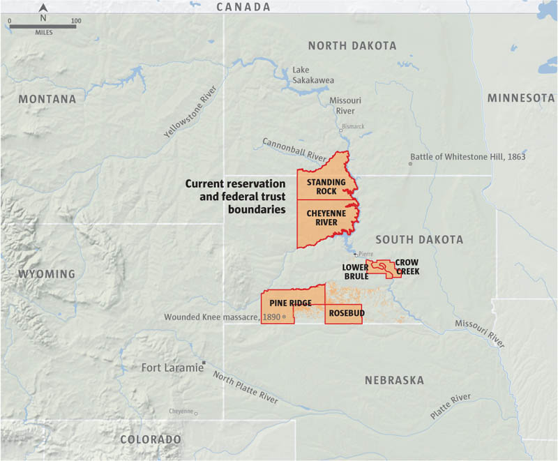

<%= t.include("partials/_head.html") %>
    
Sources: Joseph Smith, Land Management Director, Standing Rock Sioux Tribe
www.villageearth.org, www.nwo.usace.army.mil, www.indians.org, www.history.nd.gov, www.history.sd.gov
MARK NOWLIN and AUDREY CARLSEN / THE SEATTLE TIMES
<% if (json.project.production) { %> <%= !json.project.embedded ? t.include("partials/_foot.html") : "" %> <%= t.include("partials/_workHere.html") %> <% } %>